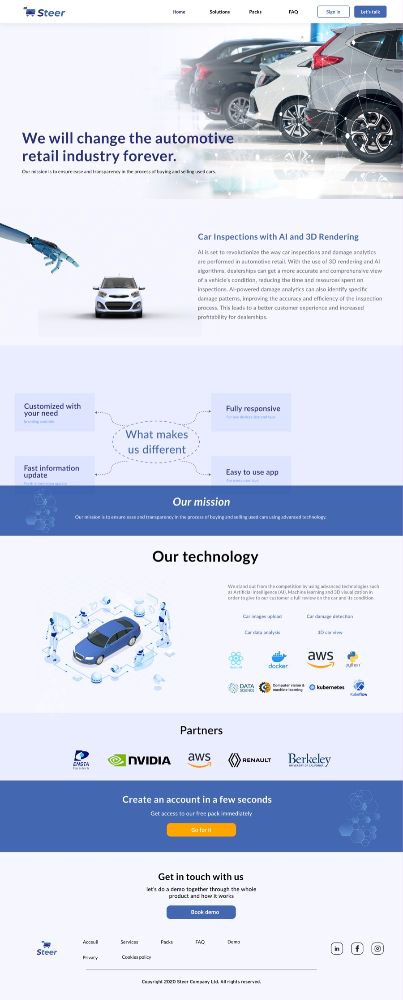

Case study
Steer
End-to-end solutions to reinvent the automotive retail industry
A C2C marketplace for used cars built on verified inspection data and a pricing algorithm, plus a B2B web platform for used-car professionals. I set the product direction, ran the research, and designed the identity, the corporate site and the dashboard.

About the project
The used-car market is difficult on both sides. New cars are getting more expensive in emerging markets, which pushes buyers toward used ones — but a used car may not be reliable and there is no easy way to know before you buy. Steer set out to fix that with two products: a C2C marketplace where buyers get detailed, verified information about a car alongside a pricing algorithm and partner services like warranties and financing, and a B2B web platform for used-car professionals covering inspections, vehicle health analysis, stock management and digital marketing.
The problem
Buying or selling a used car takes an enormous amount of process and time, and you cannot always trust the mechanic. There are red flags everywhere and very little transparency. Every car you go to see costs another inspection fee. Working out whether a given price is fair means asking a lot of people a lot of questions. First-time buyers are the most exposed, because sellers can give false information and there is no straightforward way to check it.
Design process
We started by building an identity for the startup and grounding it in market research, working the problem statement and the solution together before touching any interface. Once we understood the market we brainstormed, and I produced low-fidelity designs. We validated those, moved to high fidelity, then walked the developer through them and I followed every step of the build. Miro carried the thinking, Figma carried the design.
User research
I wrote a survey for people who had bought a used car, were considering one, or wanted a transparent diagnosis of a car they already owned. It was designed for 20 participants and I sat down with 15 of them to gather their answers from lived experience. The questions covered age, employment, budget, what they look for in a car, where they bought it, how long it took, what deceptions they ran into when viewing cars, the profile of the sellers, and what the mechanic cost them. The answers gave me a clear read on their frustrations and goals, and became the foundation for everything that followed.
Competitor analysis
Mapping the existing players showed where the market left buyers unprotected, and where verified inspection data could become the thing that differentiated Steer rather than just another listing site.
The solution
The platform rests on scalable digital inspection technology paired with a pricing algorithm, so an inspection is efficient, repeatable and trustworthy rather than a cost you pay again at every viewing. On top of that sits a marketplace with customer services designed to make both buying and selling feel supported instead of adversarial.
The corporate site
We built the B2B-facing website to present the work: what Steer does, who it is for, and how a professional gets started.
The outcome
Two years as the entire design function, and the product function with it. From October 2021 to November 2023 I ran the research, the brand, the interface and the roadmap decisions behind them. There was nobody else in design or product.
That work was what Steer took to investors. The company secured backing from the Versailles Grand Parc incubator in Île-de-France and opened a French entity there. It now builds AI tools for used-vehicle professionals — inspection, pricing, documentation and resale.
The site has been redesigned since I left. It still runs on the brand I built.